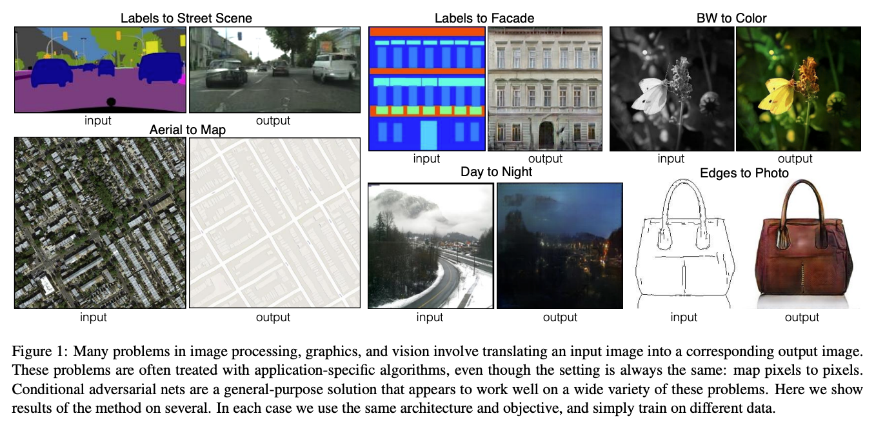
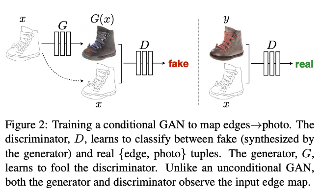
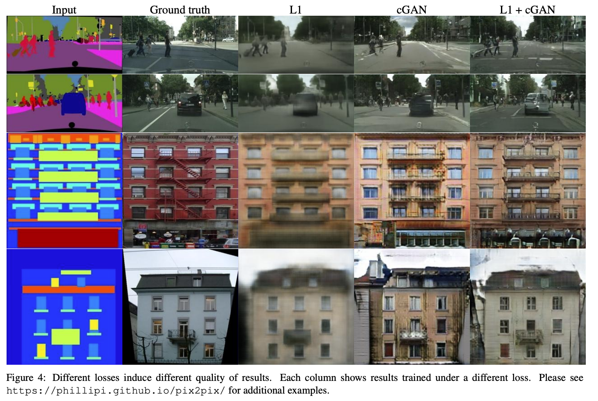
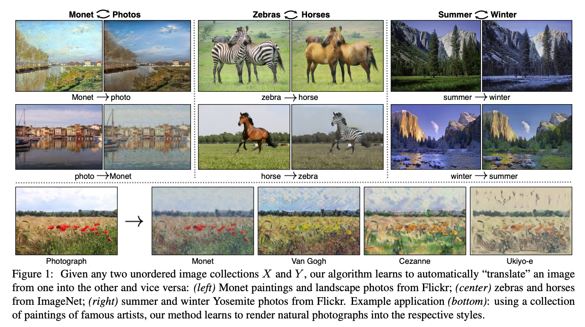
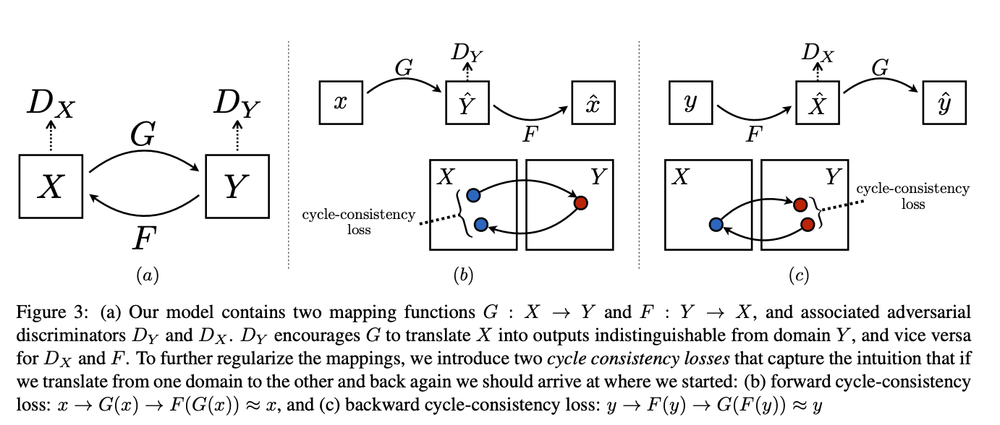
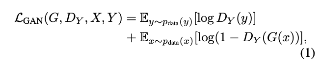
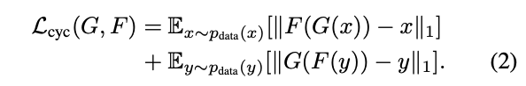
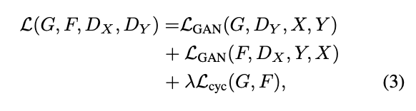

Pix2Pix, CycleGAN
by Jung Jaeeun
이번 포스팅에서는 image-to-image translation model의 조상님격인 Pix2Pix와 CycleGAN에 대해서 알아보겠습니다. Pix2Pix를 먼저 다루고 그 후에 CycleGAN에 대해 다루려고 합니다.
아래는 Pix2Pix 원논문에 나와있는 image-to-image translation을 잘 보여주는 사진입니다.

Pix2Pix
vanilla GAN은 random noise vector $z$를 output image $y$로 보내는 mapping function $G: x \rightarrow y$를 학습합니다. 그러나 conditional GAN은 observed image $x$와 random noise vector $z$를 $y$로 보내는 mapping을 학습합니다. 즉, $G: { x, z } \rightarrow y$를 학습합니다. 이를 그림으로 나타내면 아래와 같습니다.

Objective
conditional GAN의 objective function은 아래와 같이 표현될 수 있습니다.
$\mathcal{L_\textbf{cGAN}}(G, D) = \underset{x, y}{\mathbb{E}}[\log D(x, y)] +\underset{x, z}{\mathbb{E}}[\log (1-D(x, G(x, z)))]$
즉, 기존 GAN과 다르게 D는 $x, y$가 진짜 이미지에서 온 pair인지 판별하게 됩니다.
또한 GAN objective에 L1 loss를 추가해줌으로써 G로 하여금 D를 속일뿐만 아니라 output과 ground truth가 비슷하게 만드는 태스크를 추가합니다.
$\mathcal{L_\text{L1}}(G) = \mathbb{E}_{x,y,z}[\vert\vert y-G(x,z) \underset{1}{\vert\vert}]$
따라서 final objective는 아래와 같습니다.
$G^{*} = \arg \underset{G}{\min} \underset{D}{\max}\mathcal{L_\textbf{cGAN}}(G, D)+\lambda\mathcal{L_\text{L1}}(G)$
원래는 $z$에다가 Gaussian noise를 넣어주는 것이 정석인데, 여기서는 dropout을 적용하는 것으로 대체합니다. train/test시에 모두 dropout의 형태로 noise를 넣어주는 것입니다.

위의 두 loss term을 모두 합쳐준게 제일 결과가 좋습니다.
Network Architecture
구체적인 네트워크 구조에 대해서 설명하겠습니다. image-to-image translation model에서는 input과 output이 우리가 눈으로 보기에는 다른 구조를 가지지만 사실은 같은 underlying structure에서 rendering을 한 것이라고 주장합니다. 따라서, input의 구조와 output의 구조가 align 되어야합니다.
이 논문은 U-Net shape을 가진 G에 skip connection을 추가해줌으로써 encoder-decoder network의 information bottleneck 현상을 방지합니다. low-level information도 잘 전달되도록 하는 것이라고 볼 수 있습니다.
L1 Loss를 우리의 비용함수에 포함하는 것은 G가 low frequencies를 제대로 capture하도록 강제하는 것으로 볼 수 있습니다. 이로인해 D는 high-frequency structure만 잡아내면 되고, 이 논문의 저자들은 PatchGAN이라는 새로운 구조를 도입합니다.
D는 G가 생성한 전체 이미지를 보는 대신에, $N \times N$ 크기의 patch를 보고 real/fake 여부를 판별합니다. 그 후에 이것들을 평균내 D의 output으로 넣어줍니다. 이렇게 함으로써 이미지의 high-frequency를 모델링했다고 합니다. 경험적으로 $70 \times 70$짜리 패치정도가 적당했다고 하네요.
또한 특이한 점은 test시에도 train data의 통계량을 사용하지 않고 test data의 통계량을 사용했다고 합니다. 개인적으로는 $z$를 dropout으로 넣었기때문에 이 방법이 더 효과적이었던 것 같습니다.
그 뒤에는 여러 실험결과가 나오는데, 저는 이 부분은 생략하고 CycleGAN으로 넘어가겠습니다.
CycleGAN
먼저, Cycle GAN으로 생성된 결과부터 보겠습니다.

지금부터 설명드릴 Cycle GAN은 Pix2Pix의 문제점인 data insuffiency를 해결한 논문입니다. Pix2Pix는 paired image dataset이 필요합니다. 그러나 실제로 그런 데이터는 흔하지 않습니다.
Cycle GAN은 서로 다른 도메인의 이미지들간 mapping을 구해주는 모델입니다. 즉, $G: X \rightarrow Y$라는 translator와 $F: Y \rightarrow X$라는 translator를 구해줍니다. $G^{-1}= F$의 관계가 성립합니다.
하지만 우리가 neural network에게 $G^{-1}= F$가 성립하도록 explicit하게 제재를 가해주는 방법이 없습니다. 따라서 이 논문들의 저자는 Cycle Consistency Loss를 더함으로써 $F(G(x)) \approxeq x$, $G(F(x)) \approxeq y$가 성립하도록 해주었습니다.
전체적인 네트워크 구조는 아래와 같습니다.

Objective
Adversarial Loss
generated image가 target domain에서 왔는지 판별하는 D를 통해 adversarial 하게 학습합니다.

Cycle Consistency Loss
$G, F$가 역함수 관계에 있을 수 있도록 학습합니다. 이는 mode collapsing 문제도 해결해준다고 합니다.

Full Objective

언급한 Loss를 모두 결합하면 위와 같습니다.
References
Image-to-Image Translation with Conditional Adversarial Networks
Unpaired Image-to-Image Translation using Cycle-Consistent Adversarial Networks
Subscribe via RSS